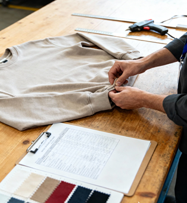

Your third-party quality control partner in Pakistan
Zasha.AIS gives global apparel brands one reliable partner for factory evaluation, quality assurance, product development and supplier sourcing — from first sample to final shipment.
About Zasha.AIS
Zasha.AIS is a Pakistan-based apparel inspection services company dedicated to helping global brands manage quality, compliance, and production with confidence. We combine third-party inspection expertise with professional buying support, giving clients a single, reliable partner for factory evaluation, quality assurance, product development, and supplier sourcing.
Our services span the full production cycle — from sample development and price checking to compliance audits, in-process inspections, and final shipment verification.
With a strong network of certified manufacturers and trained inspectors nationwide, we can send an inspector to any factory, in any city in Pakistan, within 48 hours — and deliver a PDF inspection or audit report within 24 hours.

Our Vision
To lead the apparel inspection industry with unmatched integrity, speed, and digital excellence — building long-term trust by combining human expertise with digital innovation to strengthen global supply chains.
Our Mission
To serve international apparel brands with transparent, technology-enabled inspection and sourcing services that ensure quality, compliance, and confidence across Pakistan's manufacturing sector — through honest reporting, responsible practices, and trusted partnerships.
Your standards, our precision
We deliver end-to-end apparel inspection and sourcing solutions that help brands achieve unmatched product consistency, superior craftsmanship, and reliability at every stage of production.
Precision
Our team ensures every detail is checked with accuracy, verifying fit, measurements, and workmanship throughout the production cycle to maintain consistent quality.
Assurance
With structured inspection protocols and expert evaluation methods, we strengthen your production foundation and safeguard your product standards.
Dependability
Zasha.AIS is a trusted partner for global buyers, offering reliable oversight across apparel, home textiles, leather, and technical textile categories.
How our reporting builds confidence
Every inspection ends with a report designed to be read fast and acted on immediately. Clear digital dashboards, photographic evidence, and traceable data keep you in control at every stage.
Effective communication
Information delivered in a structured, easy-to-understand format, keeping clients and teams aligned with inspection insights and results.
Data-driven decisions
Insightful, actionable reports equip clients with reliable data to confidently approve product, upgrade quality, or adjust production strategy.
Performance optimization
Evaluating historical patterns and quality trends to identify improvement opportunities and support continuous refinement.
Client control
Clarity and information that keep clients in charge of their product's quality journey, building a collaborative, transparent partnership.
Our services
Our workflow follows your production line — from raw material to loaded container. Tap any card's "Show more" to view complete inspection details.
Sample reports
Every job ends with one clear PDF — delivered within 24 hours — built around four things: what we checked, what we found, what it means, and what happens next.
PO, style, quantity offered and the AQL sample size used, so every figure is traceable.
Measurements, workmanship, fabric, trims, labeling and packing, each scored against the buyer's spec.
Time-stamped photos of defects and of correctly executed details, side by side.
A clear AQL-based result with recommended next action, so you can decide in minutes, not days.
Coverage across Pakistan
Our inspectors are based in every major manufacturing hub, so dispatch never waits on distance.
Contact us
Tell us about your order and we'll come back with a plan and a quote.